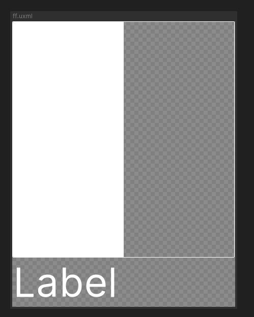

Getting Started
Some tips and tricks on how to begin using UI Components.
Quick Examples
A simple bar example
<ui:UXML xmlns:ui="UnityEngine.UIElements" xmlns:uie="UnityEditor.UIElements" xmlns:u="FasterGames.UI.Components" editor-extension-mode="False">
<u:VBox>
<u:Bar value="50" />
<ui:Label text="Label" style="font-size: 64px;" />
</u:VBox>
</ui:UXML>
Here we alias FasterGames.UI.Components to u for simpler use. We then define a basic HUD that looks like this:

Note that this is with the Runtime/Themes/Default theme applied. Your themes can derive from this.
You can try it out by loading this into a uxml file, and opening that file with UI Builder to preview it.